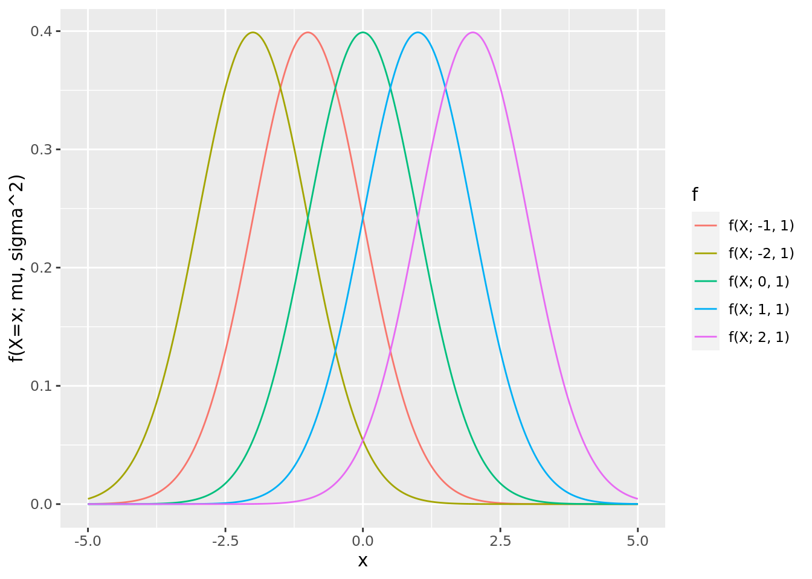
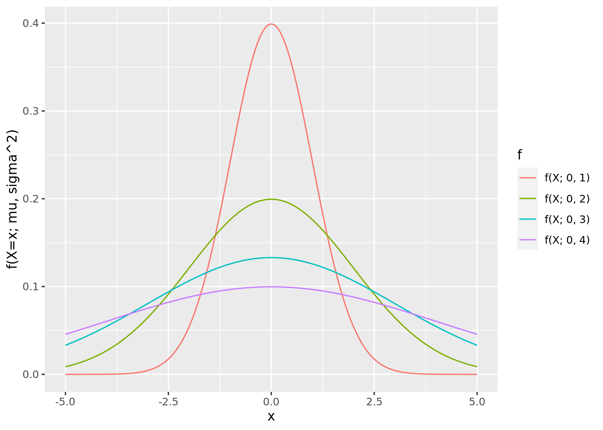

確率分布
離散分布
離散的な確率変数が従う分布
超幾何分布
A or Bからなる\(N\)個の集団を考える。A, Bの個数はそれぞれ\(M\), \(N - M\)とする。この集団から\(n\)個取り出したとき、Aの個数が\(k\)個となる確率は Equation 1 で与えられる。この確率分布を超幾何分布 Figure 1 という。資源調査などでよく用いられる。
\[ f(X=x; N, M, n) = \frac{_{M}C_{x} \cdot _{N - M}C_{n - x}}{_{N}C_{n}} \ (x = \max(0, n -(N - M)), \cdots, \min(n, M)) \tag{1}\]
Code
x <- c(0:5)
N <- 10
M <- c(3, 5, 7)
data <- tibble()
for (m in M){
sub_data <- tibble(
x = x,
y = dhyper(x, m, N - m, max(x)),
f = sprintf("f(X; %s, %s, %s)", N, m, max(x))
)
data <- rbind(data, sub_data)
}
g <- ggplot(data, aes(x = x, y = y, color = f)) +
geom_line() +
labs(y = "f(X=x; N, M, n)")
plot(g)二項分布
A or Bが観測できる試行を考える。A, Bが生起する確率をそれぞれ\(p, (1 - p)\)とする。この試行を独立に\(n\)回繰り返す(これをベルヌーイ試行と呼ぶ)。Aが\(x\)回生起する確率は Equation 2 で与えられる。この確率分布を二項分布 Figure 2 という。二項分布はコイン投げのような単純な試行で使われる。
また、\(n = 1\)のときはベルヌーイ分布と呼ぶ。
\[ f(X=x; n, p) = _{n}C_{x} p^{x} (1 - p)^{n - x} \tag{2}\]
Code
ポアソン分布
二項分布の\(n\)を大きくし、\(p\)を0に近づけた事象を考える。このように、大量の観察の中で中々生起しない現象は交通事故件数や不良品件数などが当てはまる。今、\(\lambda \fallingdotseq n p\)としたときに\(x\)回生起する確率は Equation 3 で与えられる。この確率分布をポアソン分布 Figure 3 という。
\[ f(X=x; \lambda) = \frac{\lambda^{x} e^{- \lambda}}{x!} \tag{3}\]
Code
負の二項分布
生起する確率が\(p\)であるベルヌーイ試行を繰り返すとき、\(k\)回目の生起を得るまでの失敗回数\(x\)は Equation 4 で与えられる。この確率分布を負の二項分布(パスカル分布) Figure 4 という。負の二項分布は待ち時間を表現するのに用いられる。
また、\(k = 1\)のときは 幾何分布と呼ぶ。
\[ f(X=x; p, k) = _{k + x - 1}C_{x} p^{k} (1 - p)^{x} \tag{4}\]
Code
連続分布
連続的な確率変数が従う分布
正規分布
自然界では左右非対称かつつりがね型の分布をとる現象が多く存在する。これはある代表値\(\mu\)から、ばらつきを表す量\(\sigma^{2}\)に応じた誤差の分だけ離れた観測を集めることで生成される。このような分布を正規分布\(N(\mu, \sigma^{2})\) Figure 5 といい、確率密度関数は Equation 5 である。
正規分布はあらゆる統計理論に関わっている最重要分布である。
また、\(\mu = 0, \sigma^{2} = 1\)の場合の正規分布を標準正規分布と呼ぶ。
\[ f(X=x; \mu, \sigma^{2}) = \frac{1}{\sqrt{2 \pi \sigma^{2}}} \exp{\left( \frac{- (x - \mu)^{2}}{2 \sigma^{2}} \right)} \tag{5}\]
Code
x <- seq(-5, 5, by = 0.01)
mu <- c(-2, -1, 0, 1, 2)
sigma <- c(1, 2, 3, 4)
data <- tibble()
for (m in mu){
sub_data <- tibble(
x = x,
y = dnorm(x, m, sigma[1]),
f = sprintf("f(X; %s, %s)", m, sigma[1])
)
data <- rbind(data, sub_data)
}
g <- ggplot(data, aes(x = x, y = y, color = f)) +
geom_line() +
labs(y = "f(X=x; mu, sigma^2)")
plot(g)
data <- tibble()
for (s in sigma){
sub_data <- tibble(
x = x,
y = dnorm(x, mu[3], s),
f = sprintf("f(X; %s, %s)", mu[3], s)
)
data <- rbind(data, sub_data)
}
g <- ggplot(data, aes(x = x, y = y, color = f)) +
geom_line() +
labs(y = "f(X=x; mu, sigma^2)")
plot(g)

ガンマ分布
負の二項分布を連続化した分布をガンマ分布 Figure 6 と呼ぶ。ガンマ分布はある期間\(\beta\)ごとに1回生起する現象が\(\alpha\)回起きるまでの期間\(x\)の確率を表現することができる。確率密度関数は Equation 6 である(\(\Gamma\)はガンマ関数)。ガンマ分布はベイズ統計においても頻出の分布である。
また、\(\alpha = 1\)の場合は指数分布と呼び、確率密度関数は\(f(x; \beta) = \beta e^{- \frac{x}{\beta}}\)となる。
\[ f(X=x; \alpha, \beta) = \begin{equation} \left\{ \, \begin{aligned} &\frac{\beta^{\alpha}}{\Gamma(\alpha)} x^{\alpha - 1} e^{- \frac{x}{\beta}} \ &(x \geqq 0) \\ &0 \ &(x < 0) \end{aligned} \right. \end{equation} \tag{6}\]
Code
x <- seq(0, 5, by = 0.01)
alpha <- c(1, 1.5, 2, 2.5, 3)
beta <- 2
data <- tibble()
for (a in alpha){
sub_data <- tibble(
x = x,
y = dgamma(x, a, beta),
f = sprintf("f(X; %s, %s)", a, beta)
)
data <- rbind(data, sub_data)
}
g <- ggplot(data, aes(x = x, y = y, color = f)) +
geom_line() +
labs(y = "f(X=x; alpha, beta)")
plot(g)一様分布
ある区間\([a, b]\)で、全ての事象が生起する確率が等しい分布を一様分布 Figure 7 という。確率密度関数は Equation 7 である。離散型でも同様の分布があり、両方で乱数生成の場面でよく用いられる。
\[ f(X=x; a, b) = \begin{equation} \left\{ \, \begin{aligned} &\frac{1}{b - a} \ &(a \leqq x \leqq b) \\ &0 \ &(x < a, x > b) \end{aligned} \right. \end{equation} \tag{7}\]
Code
ベータ分布
二項分布に従う確率変数について、実際の観測に基づいて母数\(x = p\)を得るとする。A, Bが生起する回数をそれぞれ\(\alpha, \beta\)したときに、その数が少ない場合は得られる\(x\)は偶然と考えるが、多い場合は確信をもって\(x\)を得られる。この\(x\)が従う分布をベータ分布 Figure 8 という。確率密度関数は Equation 8 である(\(B\)はベータ関数)。ベータ分布はベイズ統計でよく用いられる。
また、\(\alpha = 1, \beta = 1\)のときは区間\([0, 1]\)の一様分布となる。
\[ f(X=x; \alpha, \beta) = \begin{equation} \left\{ \, \begin{aligned} &\frac{x^{\alpha - 1} (1 - x)^{\beta - 1}}{B(\alpha, \beta)} \ &(0 \leqq x \leqq 1) \\ &0 \ &(x < 0, x > 1) \end{aligned} \right. \end{equation} \tag{8}\]
Code
x <- seq(0, 1, by = 0.01)
alpha <- c(2, 3, 4, 5, 6)
beta <- c(3, 5, 7, 9, 11)
data <- tibble()
for (i in 1:5){
sub_data <- tibble(
x = x,
y = dbeta(x, alpha[i], beta[i]),
f = sprintf("f(X; %s, %s)", alpha[i], beta[i])
)
data <- rbind(data, sub_data)
}
g <- ggplot(data, aes(x = x, y = y, color = f)) +
geom_line() +
labs(y = "f(X=x; alpha, beta)")
plot(g)対数正規分布
自然界でみられる現象が従う分布として正規分布を対数変換したものがある。これは、観測値に下限はあるが、上限は明確にないような現象でよくみられる（例えば、血液検査など）。これは対数正規分布 Figure 9 といい、確率密度関数は Equation 9 である。
\[ f(X=x; \mu, \sigma^{2}) = \begin{equation} \left\{ \, \begin{aligned} &\frac{1}{\sqrt{2 \pi \sigma^{2}} x} \exp{\left( \frac{- (\log{x} - \mu)^{2}}{2 \sigma^{2}} \right)} \ &(x \geqq 0) \\ &0 \ &(x < 0) \end{aligned} \right. \end{equation} \tag{9}\]
Code
x <- seq(0, 20, by = 0.01)
mu <- c(1, 2, 3, 4)
sigma <- 1
data <- tibble()
for (m in mu){
sub_data <- tibble(
x = x,
y = dlnorm(x, m, sigma),
f = sprintf("f(X; %s, %s)", m, sigma)
)
data <- rbind(data, sub_data)
}
g <- ggplot(data, aes(x = x, y = y, color = f)) +
geom_line() +
labs(y = "f(X=x; mu, sigma^2)")
plot(g)分布の平均値・分散
上記で記載した確率分布の平均値および分散は Table 1 のようになる。
| 確率分布 | 母数 | 平均値 | 分散 |
|---|---|---|---|
| 超幾何分布 | \(N, M, n\) | \(n \cdot \frac{M}{N}\) | \(n \cdot \frac{M (N - M)}{N^{2}} \cdot \frac{N - n}{N - 1}\) |
| 二項分布 | \(n, p\) | \(n p\) | \(n p (1 - p)\) |
| ポアソン分布 | \(\lambda\) | \(\lambda\) | \(\lambda\) |
| 負の二項分布 | \(p, k\) | \(\frac{k (1 - p)}{p}\) | \(\frac{k (1 - p)}{p^{2}}\) |
| 正規分布 | \(\mu, \sigma^{2}\) | \(\mu\) | \(\sigma^{2}\) |
| ガンマ分布 | \(\alpha, \beta\) | \(\alpha \beta\) | \(\alpha \beta^{2}\) |
| 一様分布 | \(a, b\) | \(\frac{a + b}{2}\) | \(\frac{(b - a)^{2}}{12}\) |
| ベータ分布 | \(\alpha, \beta\) | \(\frac{\alpha}{\alpha + \beta}\) | \(\frac{\alpha \beta}{(\alpha + \beta)^{2} (\alpha + \beta + 1)}\) |
| 対数正規分布 | \(\mu, \sigma^{2}\) | \(\exp(\mu + \frac{\sigma^{2}}{2})\) | \(\exp(2 \mu + 2 \sigma^{2}) - \exp(2 \mu + \sigma^{2})\) |